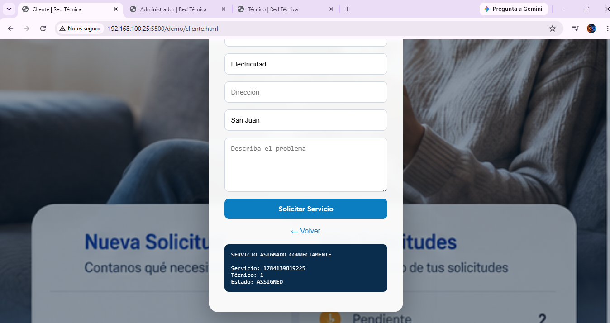
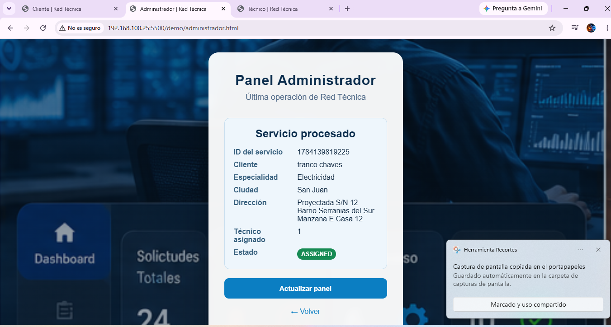
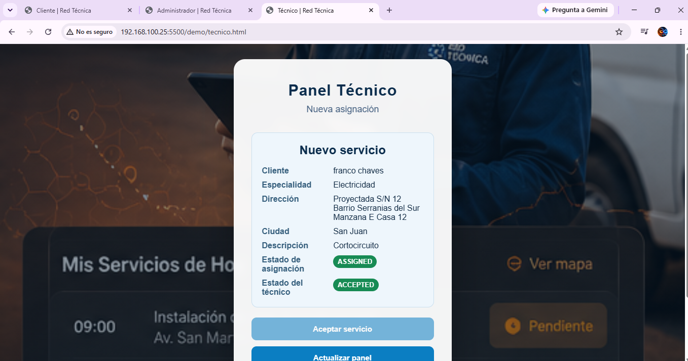

PROCESO TRADICIONAL
Información fragmentada
- Asignaciones manuales
- Múltiples canales de coordinación
- Baja trazabilidad operativa
- Dificultad para escalar
PLATAFORMA TECNOLÓGICA · VERSIÓN 1.0 RC1
Red Técnica transforma procesos manuales y dispersos en un flujo digital, centralizado y trazable para gestionar servicios técnicos.
FLUJO OPERATIVO
Arquitectura modular
API REST
Estado compartido
Despliegue reproducible
Documentación integral
EL PROBLEMA
PROCESO TRADICIONAL
CON RED TÉCNICA
PRODUCTO FUNCIONAL
La demostración conecta la solicitud del cliente, el control administrativo y la recepción del técnico mediante información compartida.



ARQUITECTURA
Red Técnica separa responsabilidades para que cada componente pueda comprenderse, probarse y evolucionar sin comprometer el resto del sistema.
EVIDENCIA DE CALIDAD
La versión actual prioriza reglas deterministas, trazabilidad y claridad arquitectónica. No declara inteligencia artificial ni funcionalidades productivas que aún no hayan sido implementadas.
OPORTUNIDAD DE ADQUISICIÓN
Red Técnica se encuentra disponible para evaluación por organizaciones interesadas en incorporar una plataforma de gestión de servicios técnicos sin comenzar el desarrollo desde cero.
El activo contempla
Red Técnica 1.0 RC1
Disponible para procesos de evaluación y adquisición.